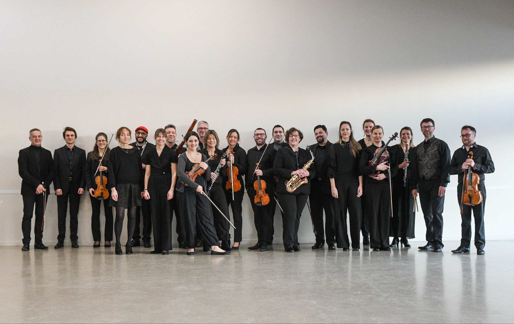
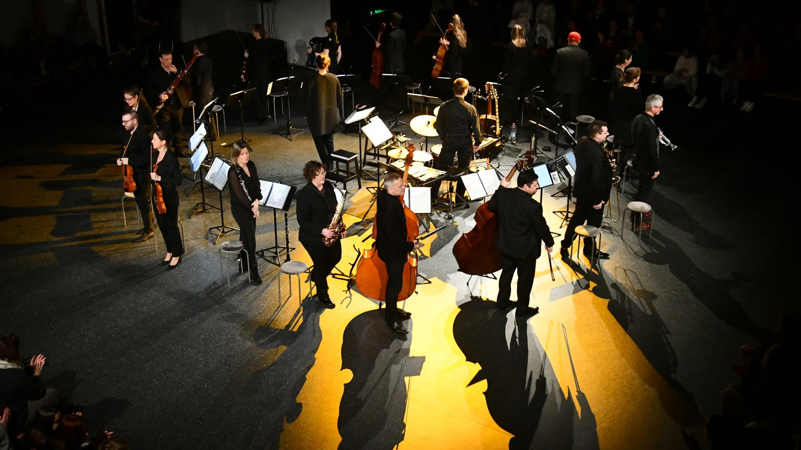

Orchestre du Lointain
Sophie Lechelle · Direction musicale
Retour en images
Carnet de bal aux Attaques
Le 16 octobre 2026, l’Orchestre du Lointain présentait Carnet de bal aux Attaques. Retour sur cette soirée en images.




Sophie Lechelle · Direction musicale
Retour en images
Le 16 octobre 2026, l’Orchestre du Lointain présentait Carnet de bal aux Attaques. Retour sur cette soirée en images.
